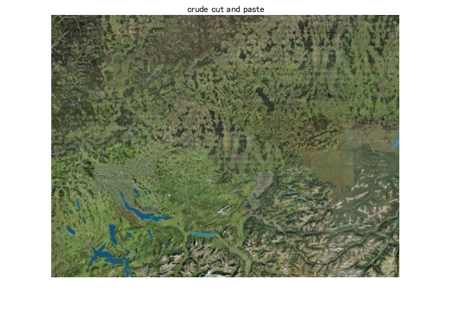
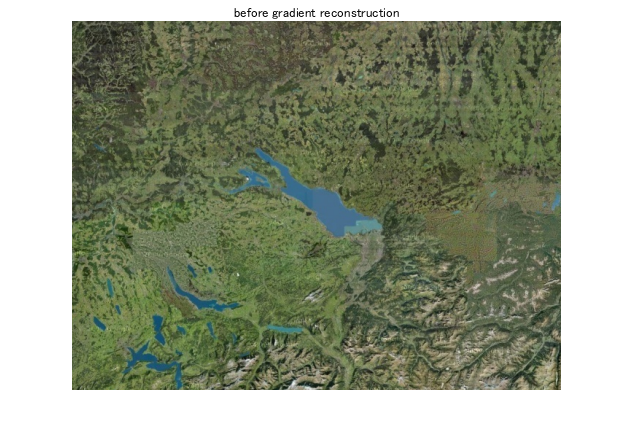

hi
note that temporary images are not included in the published document unless you use snapnow, c.f. https://ch.mathworks.com/help/matlab/ref/snapnow.html
close all target=imread8toDouble('switzerland_target.png'); source=imread8toDouble('switzerland_source.png'); mask=imread8toDoubleGrayscale('switzerland_mask.png'); dim = min([size12(target);size12(source);size12(mask)]); target = target(1:dim(1), 1:dim(2),:); source = source(1:dim(1), 1:dim(2),:); mask = mask(1:dim(1), 1:dim(2)); mask = mask < 0.5; % Compute gradients grad_target = forward_differences2_list_color(target); grad_source = forward_differences2_list_color(source); rmask = most(mask); gradients = grad_target; for i=1:3 % each channel for j = 1:2 % each partial derivative gradients(:,:,j,i) = (1-rmask) .* grad_target(:,:,j,i) + rmask .* grad_source(:,:,j,i); % Use grad_source where mask is 1 end end %imshow(rescale01(grad_target(:,:,1,c))) % c=1:3 %imshow(rescale01(grad_target(:,:,2,c))) %imshow(rescale01(grad_source(:,:,1,c))) %imshow(rescale01(grad_source(:,:,2,c))) %imshow(target) %imshow(source) %imshow(mask) %imshow(rescale01(gradients(:,:,1))) %imshow(rescale01(gradients(:,:,2))) % Ready to call solve_poisson_equation_color for i=1:3 cp(:,:,i) = (1-mask) .* target(:,:,i) + mask .* source(:,:,i); end imshow_in_figure(cp, 'crude cut and paste'); imshow_in_figure(target, 'before gradient reconstruction'); %output = solve_poisson_equation2_color(target, gradients, mask); output = solve_poisson_equation_color(target, gradients, mask,30); imshow_in_figure(output, 'after gradient reconstruction');
color channel 1 solve poisson equation Gauss-Seidel iterations... color channel 2 solve poisson equation Gauss-Seidel iterations... color channel 3 solve poisson equation Gauss-Seidel iterations... 